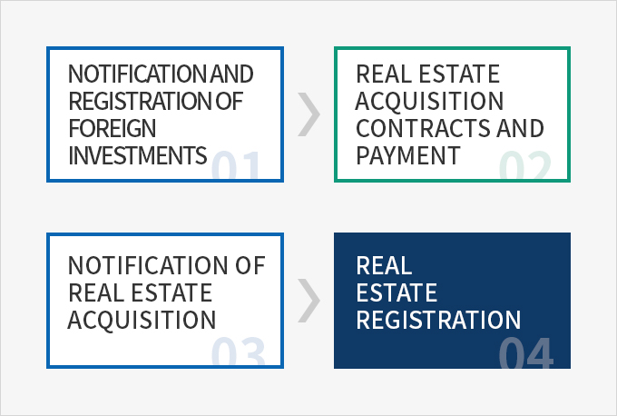
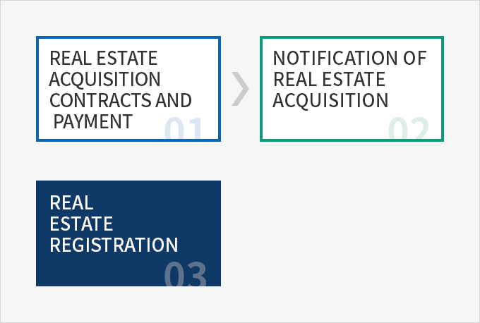
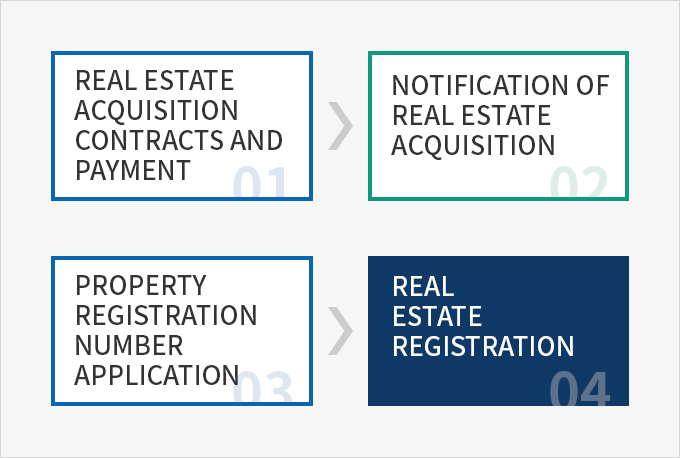
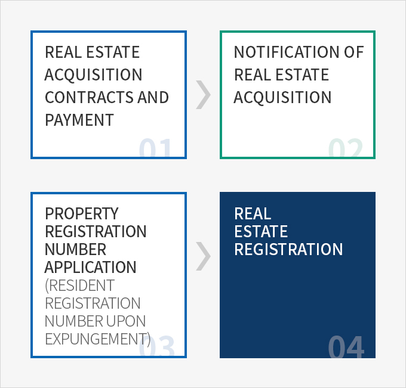

Procedures and Required Documents
- Home
- Management·Living
- Acquisition of Real Estate
- Procedures and Required Documents
- Related Laws
- Procedures and Required Documents
- Remittance of Real Estate Transaction Funds
- Applicable Taxes
- Real Estate Brokerage Commission
Foreign-Invested Companies
The Act on Report on Real Estate Transactions, Etc., the Foreign Investment Promotion Act, the Registration of Real Estate Act, etc. shall be applied when foreign-invested companies acquire real estate to engage in for-profit activities in Korea.


- Notification and registration of foreign investment
- real estate acquisition contracts and payment
- notification of real estate acquisition
- real estate registration

- Send notification of and register the foreign investment at the head or branch office of a foreign exchange bank or KOTRA
- Make a payment after concluding a real estate acquisition contract
- Send notification of the acquisition to the si/gun/gu office with jurisdiction over the real estate concerned. The notification must be made within sixty days of concluding the contract and the real estate acquisition contract must be submitted.
- Register a transfer of ownership at the competent registry office within sixty days of concluding a contract or paying the balance. The required documents include a certified copy of the corporate registration (individuals: a copy of alien registration card), application for registration, documents certifying reasons for registration (approved contract, etc.), a registration certificate, and a certified copy of real estate registration. A power of attorney and an agent’s ID card are also required in cases of applications filed by agents.
Resident Foreigners: Foreigners, Domestic Branches of a Foreign Corporation
The Act on Report of Real Estate Transactions, Etc., and the Registration of Real Estate Act shall be applied when a resident foreigner acquires real estate in Korea.

- real estate acquisition contracts and payment
- notification of real estate acquisition
- real estate registration

- Make a payment after concluding a real estate acquisition contract.
- Send notification of the acquisition to the si/gun/gu office with jurisdiction over the real estate concerned. The notification must be made within sixty days of concluding the contract and the real estate acquisition contract must be submitted.
- Register a transfer of ownership at a competent registry office within sixty days of concluding a contract or paying the balance. The required documents include a certified copy of a branch office registration (individuals: a copy of alien registration card), application for registration, documents certifying reasons for registration (approved contract, etc.), a registration certificate, and a certified copy of the real estate registration. A power of attorney and an agent’s ID card are also required in cases of applications filed by agents.
Non-Resident Foreigners
The Foreign Exchange Transaction Act, the Act on Report of Real Estate Transactions, Etc., and the Registration of Real Estate Act shall be applied when a non-resident foreigner acquires real estate in Korea.

- real estate acquisition contracts and payment
- notification of real acquisition
- property registration number application
- real estate registration

- Conclude a real estate acquisition contract
- Make a payment for real estate
- Send notification of the acquisition to the head or branch office of a foreign exchange bank in accordance with the Foreign Exchange Transactions Act when withdrawing real estate acquisition funds. The required documents are the real estate acquisition contract, real estate appraisal report or publicly notified land price certificate, and a certified copy of the real estate registration. The acquisition of rights to real estate (real rights, right to lease, etc.) must also be filed. This notification of acquisition of rights is required for overseas remittance of any gains on disposal of the real estate.
- Send notification of the acquisition to the si/gun/gu office with jurisdiction over the real estate concerned. The notification must be made within sixty days of concluding the contract and the real estate acquisition contract must be submitted.
- A real estate registration number will be assigned by the head of the local immigration office with jurisdiction over the place of residence (if the individual has no place of residence in Korea, the seat of the Supreme Court will be deemed as the place of residence). The required documents for individuals are a certificate of completion of land acquisition notification and a copy of a passport, while the required documents for corporations include a certificate of completion of land acquisition notification, a corporate registration certificate, and other documents certifying the company’s representatives and their addresses issued by authorities in the home country. A power of attorney and an agent’s ID card are also required in cases of applications filed by agents. A registration of transfer of ownership will be accepted at a competent registry office within sixty days of concluding a contract or paying the balance. The required documents include a certified copy of a branch office registration (individuals: a copy of alien registration card), application for registration, documents certifying reasons for registration (approved contract, etc.), a registration certificate, and a certified copy of the real estate registration. A power of attorney and an agent’s ID card are also required in cases of applications filed by agents.
Permanent Residents
Permanent residents hold the nationality of the Republic of Korea and are thereby treated equally with other Korean nationals regardless of whether they reside in Korea. The Act on Report of Real Estate Transactions, Etc., the Registration of Real Estate Act, etc. are applied when a permanent resident acquires real estate in Korea.

- real estate acquisition contracts and payment
- notification of real estate acquisition
- property registration number application (resident registration number upon expungement)
- real estate registration

- Make a payment after concluding a real estate acquisition contract
- Send notification of the acquisition to the si/gun/gu office with jurisdiction over the real estate concerned. The notification must be made within sixty days of concluding the contract and the real estate acquisition contract must be submitted.
- When a resident registration number has been canceled, it is possible to apply for a real estate registration number through the Seoul District Court. The required documents are the certificate of address, certificate of resident, or an overseas Korean national registration card.
- Register a transfer of ownership at a competent registry office within sixty days of concluding a contract or paying the balance.
- The required documents include the certificate of address or certificate of residence, an application for registration, documents certifying reasons for the registration (approved contract, etc.), a registration certificate, and a certified copy of the real estate registration. A power of attorney and an agent’s ID card are also required in cases of applications filed by agents.
※ Certificate of address : Certificate of overseas residency issued by a diplomatic mission abroad